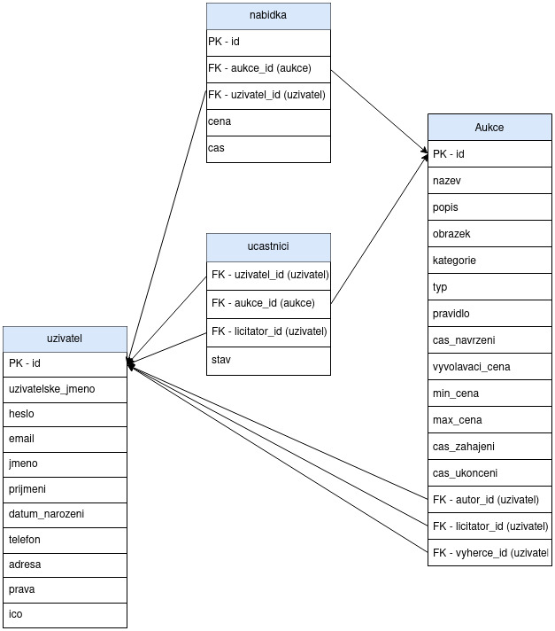

4. Aukce: prodej a nákup zboží a majetku prostřednictvím dražby
- Autoři
- Karel Jirgl
xjirgl01@stud.fit.vutbr.cz -
backend (API), trochu frontend, databáze
- Thanh Quang Tran
xtrant02@stud.fit.vutbr.cz -
frontend, databáze, trochu backend
- Tereza Buchníčková
xbuchn00@stud.fit.vutbr.cz -
databáze, frontend, trochu backend
- URL aplikace
- https://kajel.net/projects/IIS/
Uživatelé systému pro testování
Uveďte prosím existující zástupce všech rolí uživatelů.
| Login | Heslo | Role |
|---|
| admin | admin | Administrátor |
| licitator | licitator | Licitátor |
| user | user | Registrovaný uživatel |
Implementace
Backend (API)
API je implementováno čistě v PHP.
- /API/index.php - volání backendového API; zvolený příkaz se zadá jako hodnota URL parametru cmd (typu GET) (příklad volání: /API/?cmd=getAllAuctions), uživatelská data jsou v těle HTTP requestu ve formátu JSON
- /API/DB/database.php - všechny funkce pro práci s MySQL databází
- /API/auth/auth.php - funkce k autentizaci a autorizaci uživatele do systému -> rozšiřuje funkce ze souboru session.php
- /API/auth/session.php - základní funkce pro práci s PHP SESSIONS
- /API/users/users.php - funkce pro správu uživatelů
- /API/auctions/auctions.php - funkce pro správu aukcí
Frontend
Generování frontendu implementovaný částečně v PHP, vanilla Javascriptu, Jquery a Bootstrap.
Popis javascriptových souborů a na jakých stránkách jsou použity:
- /frontend/js/auctions.js ‒ Hlavní stránka aukcí
- /frontend/js/user_table.js ‒ Stránka admina na zobrazení a editaci uživatelů
- /frontend/js/auction_info.js ‒ Stránka konkrétní aukce s různými komponenty pro manipulaci s aukcemi dle konkrétního uživatele
- /frontend/js/create_auction.js ‒ Stránka na tvorbu aukce
- /frontend/js/auction_managed.js ‒ Stránka na zobrazení aukcí organizovanou daným licitátorem
- /frontend/js/auction_ready.js ‒ Stránka se seznamem Aukcí ve stavu navržena (Aukce nezačala)
- /frontend/js/profile.js ‒ Profil aktuálně přihlášeného uživatele. Může editovat svůj profil
- /frontend/js/user_attended.js ‒ Stránka se seznamem zůčastněných aukcí uživatelem
- /frontend/js/user_auctions.js ‒ Stránka se seznamem aukcí vlastněných uživatelem
- /frontend/js/login.js ‒ Login stránka
- /frontend/js/register.js ‒ Registrační stránka, po registraci uživatele NEpřihlásí
- /frontend/js/navbar.js ‒ Generování navigačního panelu stránky
Databáze

Instalace
Stručně popište:
- postup instalace na server:
- nahrát obsah adresáře src/ na webový server
- v souboru API/DB/database.php upravit údaje o SQL databázi
- spustit soubor sql/db_init.sql nad SQL databází
- softwarové požadavky: běželo na webserveru s PHP 7.3.9; MySQL (mysqlnd 5.0.12-dev); nginx/1.17.3
- defaultní správcovské údaje od systému: admin/admin
Známé problémy
Žádné vyznamné problémy se v projektu nevyskytují. Vše základní by mělo k aukci fungovat. Ještě bylo naplánováno implementovat řazení, vyhledání a filtr aukcí a uživatelů, ale kvůli nemalému množství chyb v průběhu implentace projektu nebylo dost času.
Může se ale stát, že při kliknutí na tlačítko pro vykonání určité akce nemusí dojít k žádné reakci. Chyba může být, že nedošlo k automatickému znovunačtení stránky nebo došlo k chybě, která není ošetřena (typ chyby lze dohledat v konzoli prohlížeče).